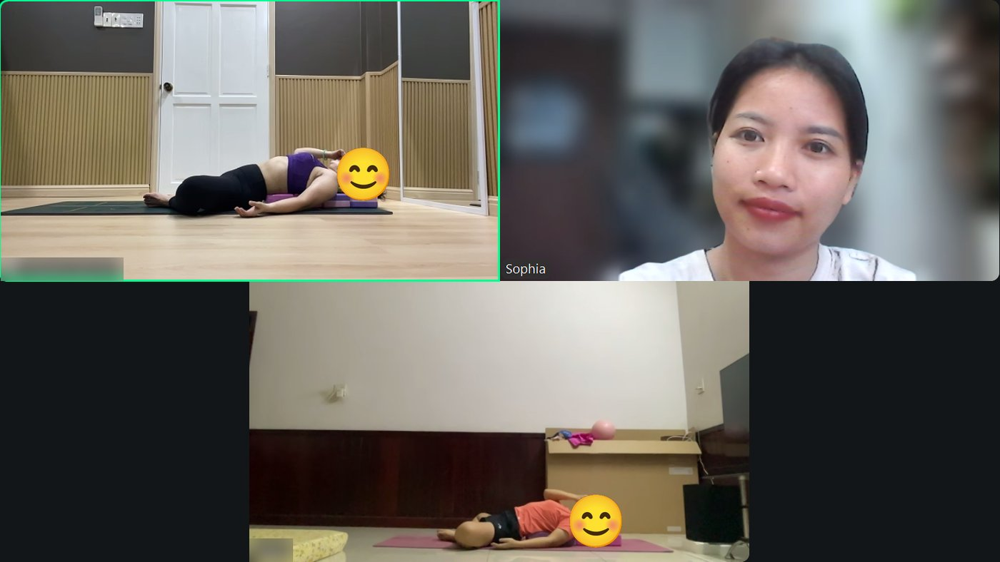

Yoga người lớn · Day ấn huyệt
Ứng dụng yoga cân bằng phục hồi cho giấc ngủ, thư giãn và đau đầu: day ấn huyệt đầu, mặt, tai, cổ, vai
Cuối buổi tập tối, cả lớp nằm thư giãn. Đèn đã tắt bớt. Cô đi một vòng, ngồi xuống phía đầu một học viên, luồn hai bàn tay xuống dưới gáy, tìm hai chỗ lõm ngay dưới xương chẩm. Rồi để yên ở đó. Chừng một phút sau, hơi thở của chị ấy dài ra, đôi lông mày giãn hẳn.
Chị bốn mươi hai tuổi, kế toán. Chị bảo tối nào cũng nằm hơn một tiếng mới ngủ được, đầu “cứ chạy”, gáy cứng như đeo một cái gông. Mấy hôm cuối tháng thì đau đầu kiểu như có cái đai siết quanh trán.
Buổi hôm ấy chị ngủ quên luôn trên thảm. Lúc dậy chị cười ngượng: “Cô ơi, chỗ đấy là chỗ nào thế, cô chỉ em với. Em về làm cho mẹ em, mẹ em cũng khó ngủ lắm.”
Bài này viết cho chị ấy. Và cho những ai muốn có một món quà nhỏ, bằng chính hai bàn tay mình, cho bản thân và người thân trước giờ ngủ.
Câu chuyện được kể lại từ nhiều học viên, đã đổi chi tiết để giữ riêng tư.
Huyệt đạo là những điểm trên cơ thể mà y học cổ truyền phương Đông dùng để châm, cứu, xoa bóp, bấm. Riêng vùng đầu, mặt, tai, cổ và vai có rất nhiều huyệt quen thuộc với người Việt: Thái dương, Ấn đường, Phong trì, Kiên tỉnh… Bà, mẹ mình xưa không học sách vở gì, cứ đau đầu là lấy dầu gió day hai bên thái dương, mỏi cổ là bóp vai cho nhau.
Sophia muốn nói thật ngay từ đầu. Khoa học hiện nay chưa tìm thấy kinh lạc như một cấu trúc giải phẫu riêng, và bằng chứng về bấm huyệt còn ở mức vừa phải, nhiều nghiên cứu nhỏ. Nhưng một bàn tay ấm, chậm, đặt đúng chỗ cơ đang căng, đi cùng hơi thở dài, thì làm được nhiều điều có thật: cơ mềm ra, nhịp tim chậm lại, đầu óc lắng xuống, và người được chạm thấy mình được thương. Với yoga cân bằng phục hồi, day ấn là một phần nhỏ. Gốc vẫn là hơi thở, cột sống, và cách mình sống mỗi ngày.

- Vì sao nên day ấn
- Lợi ích, tác dụng
- Ba gốc
- Chuẩn bị, cách đo
- Lực day ấn
- Đầu
- Mặt
- Tai
- Cổ gáy
- Vai
- Tự day trước khi ngủ
- Day cho người thân
- Khi đau đầu
- Mùi hương
- Chống chỉ định
- Khi nào đi khám
Vì sao vùng đầu, mặt, cổ, vai cần được day ấn
Cả ngày, vùng này gánh nhiều hơn mình tưởng. Cái đầu nặng chừng năm ký nằm trên một chiếc cổ mảnh. Mỗi lần cúi xuống điện thoại, cơ gáy và cơ vai phải giữ cái đầu ấy khỏi rơi về phía trước. Khi lo, mình nhíu mày. Khi gồng, mình cắn chặt răng mà không biết. Khi nhìn màn hình lâu, mắt ít chớp, cơ quanh mắt căng lên.
Tối đến, những nhóm cơ nhỏ ấy vẫn chưa chịu buông: cơ trán, cơ thái dương, cơ cắn ở hàm, nhóm cơ nhỏ dưới xương chẩm, cơ thang trên vai. Đau đầu kiểu căng thẳng, cái kiểu như đai siết quanh đầu, thường đi cùng những nhóm cơ đang co cứng này. Đầu óc cũng vậy. Cơ còn gồng thì não vẫn nhận tín hiệu “chưa an toàn”, rất khó chìm vào giấc ngủ.
Một bàn tay chạm chậm, đều, ấm là một tín hiệu ngược lại. Trên da có những sợi thần kinh rất thích kiểu vuốt chậm, khoảng vài centimet mỗi giây, và não đọc đó là cảm giác dễ chịu, gần gũi (Löken và cộng sự, Nature Neuroscience 2009). Đi kèm hơi thở ra dài, hệ thần kinh phó giao cảm, phần “nghỉ ngơi và hồi phục”, có cơ hội lên tiếng.
Lợi ích và tác dụng, nói cho đúng mức
Dễ ngủ hơn
Nhiều thử nghiệm nhỏ thấy bấm huyệt giúp cải thiện chất lượng giấc ngủ, nhất là ở người lớn tuổi. Bằng chứng còn hạn chế nhưng khá đều.
Thư giãn
Nhịp tim chậm lại, hơi thở dài ra, cơ mặt buông. Rất hợp làm cuối ngày, sau buổi tập, hoặc khi thấy bồn chồn.
Đỡ đau đầu căng thẳng
Day gáy, thái dương, vai có thể làm dịu cơn đau đầu kiểu đai siết. Không thay được thuốc khi bác sĩ đã kê, không dùng cho đau đầu lạ.
Mắt, hàm nhẹ hơn
Quanh mắt đỡ mỏi sau màn hình. Hàm bớt căng ở người hay nghiến răng, cắn chặt răng khi lo.
Gần nhau hơn
Day cho mẹ, cho chồng, cho con là cách nói thương không cần lời. Cả người day cũng chậm lại, thở sâu hơn.
Theo cách nhìn của y học cổ truyền, các huyệt ở đầu mặt giúp “thanh nhiệt, an thần, sáng mắt”, các huyệt ở gáy vai giúp “khu phong, thông kinh lạc”. Theo cách nhìn của cơ thể học, nhiều huyệt nằm đúng chỗ dây thần kinh nhỏ đi ra khỏi lỗ xương (như Tứ bạch, Toản trúc), hoặc trên những điểm cơ hay co cứng (như Phong trì, Kiên tỉnh, Giáp xa). Hai cách nhìn khác nhau, nhưng gặp nhau ở chỗ bàn tay đặt vào đâu thì cơ thể dịu lại ở đó.
Ba gốc của yoga cân bằng phục hồi
- 🌬️Hơi thở là gốc. Ấn khi thở ra, nhả khi hít vào. Không có hơi thở, day ấn chỉ còn là nắn bóp. Có hơi thở, mỗi lần ấn là một lần buông.
- 🌿Cột sống là trọng tâm. Đầu mặt cổ vai căng phần lớn vì cột sống cổ phải gánh cái đầu đưa ra trước cả ngày. Day xong mà cổ vẫn cúi mười tiếng mỗi ngày thì căng sẽ quay lại.
- ⚖️Cân bằng là hướng đi. Không day thật mạnh cho “thông”. Không làm một lần thật lâu rồi bỏ cả tuần. Nhẹ, đều, mỗi tối mười phút.
Nhìn trên cả năm thể
Yoga nhìn con người qua năm lớp (bài Năm thể của con người kể kỹ hơn). Day ấn chạm vào thân, nhưng đi xa hơn thân.
Thân
Cơ trán, hàm, gáy, vai mềm ra. Máu lưu thông ở da đầu, da mặt.
Khí
Hơi thở chậm, dài, đều theo nhịp tay. Ấn khi thở ra.
Tâm
Cảm giác được chăm sóc, an toàn. Bớt bồn chồn trước giờ ngủ.
Trí
Chú ý dồn vào một điểm nhỏ dưới ngón tay. Đầu óc thôi chạy.
Tinh thần
Lòng biết ơn với cơ thể. Sự gắn bó giữa người day và người được day.
Chuẩn bị trước khi day
Chuẩn bị chỉ mất hai phút, nhưng làm cho cả buổi khác hẳn.
- Tay sạch, móng ngắn, ấm. Xoa hai lòng bàn tay vào nhau đến khi nóng. Tay lạnh chạm vào gáy làm người ta giật mình, cơ co lại.
- Chỗ ngồi, chỗ nằm. Tự day thì ngồi tựa lưng hoặc nằm ngửa, gối mỏng dưới đầu. Day cho người thân thì người ấy nằm ngửa, mình ngồi phía đầu, hoặc người ấy ngồi ghế, mình đứng phía sau.
- Ánh sáng dịu, điện thoại để xa. Nếu day trước khi ngủ, tắt đèn trần, chỉ để đèn ngủ.
- Hỏi trước khi chạm. Với người thân cũng vậy. “Mẹ để con day đầu cho mẹ nhé?” Một câu hỏi nhỏ cho người ta quyền nói không, và vì thế họ buông dễ hơn.
- Dầu hay không dầu. Trên mặt, gáy, vai có thể dùng một chút dầu nền (dầu dừa, dầu jojoba) để tay trượt êm. Trên tóc thì day khô. Mùi hương có phần riêng ở dưới.
Cách đo “thốn” để tìm huyệt
Y học cổ truyền đo bằng chính bàn tay của người được day, gọi là đồng thân thốn: bề ngang đốt ngón cái là 1 thốn, bốn ngón tay khép lại là 3 thốn. Không cần chính xác tới từng milimet. Người ta tìm huyệt bằng cảm giác: chỗ hơi lõm, hơi tức khi ấn vào, thường là đúng chỗ.
Lực day ấn bao nhiêu là đủ
Đây là chỗ hay sai nhất. Nhiều người nghĩ phải đau mới có tác dụng. Thực ra với mục đích ngủ ngon và thư giãn, lực vừa đủ cho cơ buông là tốt nhất. Đau quá thì cơ thể gồng lại, hệ thần kinh lại bật chế độ phòng vệ, đi ngược điều mình muốn.
Kéo để thử cảm nhận mức lực
Muốn hình dung bằng con số thì thử ấn một ngón tay lên chiếc cân nhà bếp: lực nhẹ trên mặt chỉ khoảng nửa ký đến một ký, lực vừa ở gáy, vai khoảng một đến ba ký. Con số chỉ để hình dung. Thước đo thật là gương mặt và hơi thở của người được day. Mặt nhăn lại, hơi thở nín, vai nhô lên là quá tay rồi.
Bốn cách tác động
Ấn giữ
Ấn thẳng vào huyệt khi thở ra, giữ năm đến bảy giây, nhả khi hít vào. Ba đến năm lần.
Day tròn
Đầu ngón tay giữ yên trên da, xoay vòng nhỏ chậm cho da và cơ bên dưới chuyển động theo. Không chà xát mặt da.
Miết
Đầu ngón cái trượt chậm dọc một đường, như dọc lông mày, dọc bờ dưới xương chẩm. Lực đều từ đầu đến cuối.
Vuốt
Cả lòng bàn tay vuốt nhẹ từ giữa ra ngoài, từ trên xuống. Dùng để mở đầu và kết thúc, để nối các huyệt với nhau.
Mỗi huyệt khoảng ba mươi giây đến một phút là đủ. Cả buổi từ mười đến mười lăm phút. Day trước khi ngủ thì chậm, nhẹ, đều. Day lúc đau đầu căng thẳng thì có thể vừa tay hơn ở gáy và vai, nhưng trên mặt vẫn giữ nhẹ.
Vùng đầu
Bấm vào một chấm số trên hình, hoặc vào tên huyệt, để xem vị trí, cách làm và lực. Hình bên trái là mặt nhìn thẳng; góc trên bên phải là đỉnh đầu nhìn từ trên xuống.
Bấm vào một chấm số trên hình để xem huyệt ấy.
1Bách hội GV20 · đỉnh đầu
Ở đâu. Đỉnh đầu, trên đường giữa. Dễ tìm nhất: đặt hai ngón cái lên đỉnh hai vành tai, hai ngón giữa gặp nhau trên đỉnh đầu, chỗ hơi lõm mềm ở đó.
Tác dụng. Theo y học cổ truyền là nơi “trăm mạch hội về”, dùng để an thần, làm nhẹ đầu, bớt choáng váng. Nhiều người thấy đầu “thoáng” hẳn khi được ấn nhẹ ở đây.
Cách làm. Đặt đầu ngón giữa, hoặc cả lòng bàn tay úp lên đỉnh đầu. Ấn nhẹ xuống khi thở ra, giữ năm giây, nhả khi hít vào. Năm lần. Hoặc day tròn chậm ba mươi giây.
Lực 3 trên 10, nhẹ
Lưu ý. Không gõ, không ấn mạnh ở trẻ nhỏ (thóp). Người vừa chấn thương đầu, có vết thương da đầu thì không làm.
2Tứ thần thông EX-HN1 · quanh đỉnh đầu
Ở đâu. Bốn điểm quanh Bách hội, mỗi điểm cách Bách hội 1 thốn về phía trước, sau, trái, phải.
Tác dụng. Hay dùng cùng Bách hội cho người khó ngủ, hay quên, đầu óc căng.
Cách làm. Xòe năm đầu ngón tay như chiếc lược, đặt quanh đỉnh đầu, day tròn chậm như đang gội đầu khô. Ba mươi đến sáu mươi giây.
Lực 3 trên 10, nhẹ
Lưu ý. Day bằng phần thịt đầu ngón tay, không dùng móng.
3Thái dương EX-HN5 · hai bên thái dương
Ở đâu. Từ điểm giữa đuôi lông mày và đuôi mắt, đi lùi về phía tai khoảng 1 thốn, có chỗ lõm. Nghiến nhẹ răng sẽ thấy cơ ở đó nhô lên.
Tác dụng. Huyệt quen thuộc nhất cho đau đầu, nhất là đau hai bên thái dương, nặng đầu, mỏi mắt. Bên dưới là cơ thái dương, cơ này căng lên ở người hay nghiến răng.
Cách làm. Hai ngón giữa đặt hai bên cùng lúc, day tròn chậm về phía sau. Hai mươi đến ba mươi vòng. Rồi ấn giữ năm giây khi thở ra.
Lực 3 đến 4 trên 10
Lưu ý. Vùng này xương mỏng, có mạch máu nông. Không ấn mạnh, không gõ. Đang đau nửa đầu dữ dội, nhiều người lại thấy chạm vào khó chịu: lúc đó chỉ chườm mát, nằm phòng tối.
Vùng mặt
Da mặt mỏng, quanh mắt càng mỏng. Ở mặt, cô chỉ dùng lực nhẹ, và luôn ấn lên xương, không bao giờ ấn vào nhãn cầu. Các huyệt trên mặt xem trên cùng hình phía trên.
4Ấn đường EX-HN3 · giữa hai đầu lông mày
Ở đâu. Điểm giữa hai đầu lông mày, chỗ mình hay nhíu lại khi lo nghĩ.
Tác dụng. An thần, dịu căng thẳng, nhẹ đầu, thông mũi. Trong yoga đây cũng là vùng luân xa thứ sáu, nơi người tập hay đặt sự chú ý khi thiền.
Cách làm. Đầu ngón giữa đặt lên, day tròn thật chậm. Hoặc ấn giữ khi thở ra, cảm giác như đang “là phẳng” nếp nhăn giữa trán. Sau đó vuốt từ Ấn đường lên chân tóc.
Lực 2 đến 3 trên 10
Lưu ý. Có mụn viêm, vết thương ở đây thì bỏ qua.
5Toản trúc BL2 · đầu trong lông mày
Ở đâu. Chỗ lõm nhỏ ở đầu trong của lông mày, ngay trên góc trong mắt.
Tác dụng. Mỏi mắt, đau đầu vùng trán, nặng xoang trán. Nhiều người ngồi máy tính day chỗ này là thấy mắt “sáng” ra.
Cách làm. Hai ngón cái hoặc hai ngón trỏ đặt hai bên, ấn hơi hướng lên trên vào bờ xương, giữ năm giây, nhả. Năm lần.
Lực 3 trên 10
Lưu ý. Ấn vào bờ xương phía trên, không trượt xuống ổ mắt.
6Ngư yêu EX-HN4 · giữa lông mày
Ở đâu. Giữa cung lông mày, thẳng trên con ngươi khi nhìn thẳng.
Tác dụng. Mỏi mắt, nặng mí, đau đầu vùng trán.
Cách làm. Miết dọc lông mày từ Toản trúc qua Ngư yêu ra Ty trúc không, chậm, năm lần. Dừng lại ấn nhẹ ở mỗi điểm.
Lực 2 đến 3 trên 10
Lưu ý. Người vừa xăm, phun lông mày thì đợi da lành hẳn.
7Ty trúc không TE23 · đuôi lông mày
Ở đâu. Chỗ lõm ở đuôi lông mày.
Tác dụng. Đau đầu một bên, mỏi mắt, giật mí.
Cách làm. Day tròn nhẹ hai mươi vòng, rồi trượt ngón tay ra sau một chút là tới Thái dương.
Lực 3 trên 10
Lưu ý. Nhẹ tay, vùng này gần mạch máu nông.
8Tứ bạch ST2 · dưới mắt
Ở đâu. Nhìn thẳng, từ con ngươi kẻ xuống, cách bờ dưới mắt khoảng một khoát ngón tay có một chỗ lõm nhỏ trên xương gò má.
Tác dụng. Mỏi mắt, nặng mặt, nghẹt mũi. Dưới chỗ này có một nhánh thần kinh nhỏ đi ra, ấn vào hay thấy tê tê nhẹ.
Cách làm. Ngón giữa đặt lên, ấn giữ ba đến năm giây, nhả. Năm lần. Hoặc day thật nhẹ.
Lực 2 trên 10, rất nhẹ
Lưu ý. Chỉ ấn lên xương gò má. Tuyệt đối không ấn lên nhãn cầu, không kéo da quanh mắt.
9Nghênh hương LI20 · cạnh cánh mũi
Ở đâu. Trong rãnh mũi má, ngang điểm giữa bờ ngoài cánh mũi.
Tác dụng. Nghẹt mũi, mũi khô, thở mũi khó trước khi ngủ. Thở được bằng mũi thì ngủ yên hơn.
Cách làm. Hai ngón trỏ day tròn hai bên, rồi miết nhẹ dọc sống mũi lên tới Toản trúc. Mười lần.
Lực 3 trên 10
Lưu ý. Không bôi tinh dầu bạc hà, dầu gió ở đây hay trong mũi.
10Quyền liêu SI18 · dưới gò má
Ở đâu. Từ đuôi mắt kẻ thẳng xuống, gặp bờ dưới xương gò má, có chỗ lõm.
Tác dụng. Mặt căng, mỏi hàm, đau nhức vùng má. Ấn vào hay thấy tức dễ chịu.
Cách làm. Ngón giữa ấn hơi hướng lên dưới xương gò má, giữ năm giây khi thở ra. Rồi vuốt dọc bờ dưới gò má ra tai.
Lực 3 đến 4 trên 10
Lưu ý. Mới làm răng, nhổ răng, đang viêm xoang hàm sốt thì đợi khỏi.
11Giáp xa ST6 · cơ hàm
Ở đâu. Phía trước và trên góc hàm khoảng một khoát ngón tay. Cắn chặt răng, chỗ cơ nổi lên cao nhất là đây.
Tác dụng. Hàm căng, nghiến răng khi ngủ, đau đầu đi kèm căng hàm. Người lo nghĩ nhiều thường cắn răng cả ngày mà không biết.
Cách làm. Hé miệng một chút cho răng không chạm nhau. Hai ngón giữa day tròn chậm hai bên ba mươi giây. Rồi há miệng nhẹ, thở ra bằng miệng một hơi dài.
Lực 4 đến 5 trên 10
Lưu ý. Đau khớp hàm cấp, há miệng khó, sưng đau dưới tai thì đi khám nha, tai mũi họng trước.
Vùng tai
Tai nhỏ mà nhiều đầu dây thần kinh. Y học cổ truyền coi vành tai như một tấm bản đồ thu nhỏ của cơ thể, có cả một môn nhĩ châm riêng. Không cần thuộc bản đồ ấy. Chỉ cần xoa cả vành tai cho ấm, người ta đã thấy dễ chịu rồi. Hình nhìn nghiêng dưới đây có cả các huyệt quanh tai và dưới xương chẩm.
Bấm vào một chấm số trên hình để xem huyệt ấy.
12Hạ quan ST7 · trước tai
Ở đâu. Trước tai, chỗ lõm ngay dưới cung xương gò má. Ngậm miệng thì thấy lõm, há miệng thì chỗ đó lồi lên.
Tác dụng. Khớp hàm mỏi, nghiến răng, ù tai nhẹ do căng cơ hàm.
Cách làm. Ngậm miệng nhẹ, ngón giữa day tròn chậm ba mươi giây. Kết hợp với Giáp xa.
Lực 3 đến 4 trên 10
Lưu ý. Khớp hàm kêu lục cục kèm đau, há miệng lệch: cần bác sĩ răng hàm mặt xem.
13Thính cung SI19 · trước bình tai
Ở đâu. Ngay trước bình tai (mẩu sụn nhỏ trước lỗ tai). Há miệng nhẹ thì thấy chỗ lõm.
Tác dụng. Theo y học cổ truyền dùng cho ù tai, nặng tai. Với cô, đây là điểm làm hàm và vùng quanh tai mềm ra.
Cách làm. Há miệng nhẹ, ngón trỏ ấn giữ năm giây, ngậm miệng lại, nhả. Năm lần.
Lực 2 đến 3 trên 10
Lưu ý. Ù tai mới xuất hiện, nghe kém đột ngột, chảy dịch tai là việc của bác sĩ tai mũi họng, cần đi khám sớm.
14Ế phong TE17 · sau dái tai
Ở đâu. Sau dái tai, chỗ lõm giữa mỏm xương chũm (cục xương sau tai) và góc hàm.
Tác dụng. Căng vùng sau tai, hàm, mặt. Hay dùng cùng An miên trước khi ngủ.
Cách làm. Ngón giữa đặt vào, day thật nhẹ, chậm hai mươi vòng.
Lực 2 trên 10, rất nhẹ
Lưu ý. Có tuyến mang tai và dây thần kinh mặt đi gần. Chỉ day nhẹ. Có hạch, sưng đau ở đây thì không day, đi khám.
15An miên huyệt ngoài kinh · sau tai
Ở đâu. Tên huyệt nghĩa là “ngủ yên”. Nằm giữa Ế phong và Phong trì, ngay sau cục xương chũm.
Tác dụng. Huyệt được dùng nhiều nhất cho khó ngủ, ngủ không sâu, hay trằn trọc.
Cách làm. Nằm sẵn trên giường. Hai ngón giữa đặt hai bên, day tròn chậm, mỗi vòng theo một hơi thở. Một phút. Xong để tay xuôi, không làm gì nữa.
Lực 3 trên 10
Lưu ý. Day theo nhịp thở, càng về cuối càng nhẹ, như đang ru.
16Cả vành tai xoa tai, kéo dái tai
Ở đâu. Toàn bộ vành tai. Phần lõm hình tam giác ở phía trên vành tai trong nhĩ châm gọi là Thần môn tai, hay được dùng cho giấc ngủ và lo âu.
Tác dụng. Tai ấm lên, cả đầu thấy nhẹ, dễ thư giãn. Rất hợp cho người già, người khó nằm lâu để được day.
Cách làm. Ngón cái và ngón trỏ kẹp nhẹ mép tai, xoa từ trên xuống dái tai, ba lượt. Kéo dái tai nhẹ xuống dưới, ra ngoài, năm lần. Ấn nhẹ vùng lõm phía trên vành tai mười giây. Cuối cùng úp hai lòng bàn tay lên tai, thở ba hơi trong yên lặng.
Lực 2 đến 3 trên 10
Lưu ý. Không cho ngón tay vào lỗ tai. Tai đang viêm, mới bấm lỗ tai thì tránh.
Vùng cổ và gáy
Phía sau gáy là nơi day ấn đem lại nhiều dễ chịu nhất. Phía trước cổ thì khác: ở đó có động mạch cảnh và xoang cảnh, một chỗ nhạy với áp lực, ấn vào có thể làm tim chậm, tụt huyết áp, choáng. Vì vậy cô không bao giờ ấn ở cổ trước, cũng không ấn cùng lúc hai bên cổ. Trên hình, vùng ấy tô đỏ.
Bấm vào một chấm số trên hình để xem huyệt ấy.
17Phong trì GB20 · dưới xương chẩm
Ở đâu. Sờ từ sau tai về giữa gáy, ngay dưới bờ xương chẩm, có hai hõm lõm nằm giữa hai khối cơ dọc cổ. Ấn vào thường thấy tức lan lên đầu.
Tác dụng. Huyệt được dùng nhiều nhất cho đau đầu căng thẳng, nặng đầu, mỏi cổ gáy, mỏi mắt, khó ngủ. Bên dưới là nhóm cơ nhỏ dưới chẩm, nhóm cơ căng cứng ở người cúi điện thoại nhiều.
Cách làm. Tự làm: hai ngón cái đặt vào hai hõm, các ngón còn lại ôm lấy đầu. Ấn hướng lên trên, về phía đỉnh đầu, khi thở ra, giữ năm đến bảy giây, nhả khi hít vào. Năm lần, rồi day tròn ba mươi giây. Làm cho người nằm: luồn hai bàn tay ngửa dưới gáy, các đầu ngón giữa móc nhẹ vào hai hõm, để chính sức nặng của đầu tạo lực. Giữ yên một đến hai phút.
Lực 4 đến 6 trên 10
Lưu ý. Ấn hướng lên, không ấn thẳng vào sâu giữa cổ. Không bẻ, vặn cổ. Người có bệnh đốt sống cổ, chóng mặt khi ngửa cổ thì làm nhẹ, ở tư thế nằm.
18Phong phủ GV16 · giữa gáy
Ở đâu. Trên đường giữa gáy, ngay dưới u xương chẩm (cục xương nhô ở sau đầu), giữa hai Phong trì.
Tác dụng. Nặng đầu, cứng gáy, cảm lạnh vùng gáy.
Cách làm. Đặt đầu ngón giữa, ấn giữ thật nhẹ, hướng lên. Ba lần năm giây. Thường cô chỉ đặt tay giữ ấm ở đây.
Lực 2 đến 3 trên 10
Lưu ý. Chỉ nhẹ tay. Không ấn sâu, không day mạnh ở đường giữa gáy.
19Thiên trụ BL10 · hai bên gáy
Ở đâu. Thấp hơn Phong trì một chút, gần đường giữa hơn, ngay chân tóc gáy, trên bờ ngoài hai khối cơ dọc gáy.
Tác dụng. Cứng gáy, đau đầu vùng chẩm, mỏi mắt. Hay đi đôi với Phong trì.
Cách làm. Ngón cái và ngón trỏ của một bàn tay kẹp hai bên gáy, miết từ chân tóc xuống chân cổ, chậm, năm lượt. Dừng ấn ở Thiên trụ năm giây.
Lực 4 đến 5 trên 10
Lưu ý. Miết trên cơ hai bên, không miết lên các mỏm xương sống cổ ở giữa.
20Đại chùy GV14 · chân cổ
Ở đâu. Cúi đầu xuống, đốt xương nhô cao nhất ở chân cổ là đốt cổ bảy. Đại chùy là chỗ lõm ngay dưới đốt ấy.
Tác dụng. Theo y học cổ truyền dùng cho cảm lạnh, mệt mỏi, cứng vai gáy. Ở nhà mình hay giữ ấm chỗ này khi trời lạnh.
Cách làm. Úp cả lòng bàn tay ấm lên, xoa tròn chậm cho nóng lên. Không cần ấn.
Lực 2 trên 10, chỉ xoa ấm
Lưu ý. Không ấn mạnh lên xương sống. Có u, gù nhô bất thường, đau nhói xương thì đi khám.
Vùng vai
Vai là nơi nhiều người “cất” căng thẳng. Có khi chính mình không biết vai đang nhô lên gần tai cho đến khi có ai đó đặt tay lên. Hai huyệt vai xem trên hình phía sau ở trên.
21Kiên tỉnh GB21 · đỉnh vai
Ở đâu. Điểm giữa đường nối Đại chùy và mỏm vai, trên đỉnh khối cơ vai. Đặt bàn tay phải lên vai trái, ngón giữa rơi vào đâu thì gần đó.
Tác dụng. Mỏi vai, cứng cổ, đau đầu lan từ vai gáy lên. Khối cơ thang trên ở đây là chỗ hay có những “nút” cứng.
Cách làm. Tự làm: tay phải bóp vai trái, ngón cái phía sau, bốn ngón phía trước, bóp khi thở ra, nhả khi hít vào. Mười lần rồi đổi bên. Làm cho người nằm: hai lòng bàn tay đặt lên hai đỉnh vai, mỗi hơi thở ra thì ấn nhẹ vai xuống phía chân.
Lực 4 đến 6 trên 10
Lưu ý. Y học cổ truyền khuyên không ấn mạnh huyệt này ở phụ nữ đang mang thai. Người gầy, loãng xương: bóp nhẹ, không véo.
22Thiên tông SI11 · giữa xương bả vai
Ở đâu. Chỗ lõm ở khoảng giữa xương bả vai, hơi lệch lên trên. Ấn vào thường tức lan xuống cánh tay.
Tác dụng. Mỏi bả vai, nặng lưng trên sau một ngày ngồi máy tính.
Cách làm. Huyệt này cần người khác làm. Người được day ngồi ghế hoặc nằm sấp. Ngón cái ấn giữ năm giây khi người ấy thở ra, năm lần mỗi bên. Tự làm thì nằm ngửa, kê một quả bóng tennis dưới bả vai, thả người nằm lên.
Lực 4 đến 6 trên 10
Lưu ý. Đau bả vai trái kèm khó thở, tức ngực, vã mồ hôi không phải chuyện để day: gọi cấp cứu.
Thêm hai huyệt ở bàn tay, tiện làm mọi lúc
Hợp cốc (LI4)
Trên mu bàn tay, giữa ngón cái và ngón trỏ, chỗ cơ nổi cao nhất khi khép hai ngón lại. Dùng nhiều cho đau đầu, đau răng. Ngón cái tay kia ấn giữ năm giây, năm lần, lực 4 đến 5.
Không ấn huyệt này khi đang mang thai, theo lời khuyên truyền thống.
Thần môn (HT7)
Trên nếp gấp cổ tay phía lòng bàn tay, ở bờ phía ngón út, chỗ lõm cạnh gân. Tên huyệt nghĩa là “cửa của tâm thần”, dùng cho bồn chồn, khó ngủ. Day nhẹ một phút mỗi bên khi đã nằm trên giường.
Mười một phút tự day trước khi ngủ
Ngồi tựa đầu giường hoặc nằm ngửa. Bấm bắt đầu, nghe tiếng chuông nhỏ thì chuyển sang bước sau. Không cần nhớ hết, cứ làm theo lời nhắc trên màn hình. Làm xong thì đặt điện thoại xa giường.
Tối nay ngủ êm
- Xoa ấm hai tay Xoa hai lòng bàn tay đến khi nóng. Thở ra dài hơn hít vào.
- Ấn đường Ngón giữa day tròn thật chậm giữa hai đầu lông mày. Để trán phẳng ra.
- Dọc lông mày Miết từ đầu lông mày ra đuôi, dừng ấn ở Toản trúc, Ngư yêu, Ty trúc không.
- Thái dương Hai ngón giữa day tròn về phía sau. Răng hé ra, không cắn.
- Gò má Ấn nhẹ Tứ bạch rồi Quyền liêu, vuốt dọc gò má ra tai.
- Hàm Day Giáp xa, Hạ quan. Há miệng nhẹ, thở ra bằng miệng một hơi.
- Vành tai Xoa mép tai từ trên xuống, kéo dái tai xuống dưới, ra ngoài.
- An miên Sau cục xương chũm. Day theo nhịp thở, mỗi vòng một hơi.
- Phong trì Hai ngón cái ấn hướng lên khi thở ra, nhả khi hít vào.
- Kiên tỉnh Tay phải bóp vai trái theo hơi thở ra, rồi đổi bên.
- Bách hội Úp lòng bàn tay lên đỉnh đầu, ấn nhẹ khi thở ra.
- Úp tay lên mắt Hai lòng bàn tay ấm khum lên mắt. Thở. Không làm gì nữa.
Nếu thấy buồn ngủ giữa chừng thì cứ ngủ. Đó là đích của buổi day, không phải làm cho đủ bước.
Day cho người thân
Người được day nằm ngửa, một chiếc gối mỏng dưới đầu, khăn mỏng đắp ngang ngực cho ấm. Mình ngồi phía trên đầu, lưng thẳng, vai thả. Đây là điều cô hay nhắc người học: người day cũng phải thở chậm. Tay của một người đang vội, đang bực thì người nằm cảm nhận được ngay.
Mười hai phút cho người mình thương
- Đặt tay lên vai Hai lòng bàn tay đặt nhẹ lên hai vai. Cùng thở ba, bốn hơi.
- Vuốt trán Hai ngón cái vuốt từ giữa trán ra hai bên thái dương, nhiều lượt.
- Ấn đường, Toản trúc Ấn giữ khi người ấy thở ra. Hỏi: “Lực thế này được không?”
- Thái dương Day tròn cả hai bên cùng lúc, đều, chậm.
- Gò má Ấn Quyền liêu, vuốt dọc bờ dưới gò má ra tai.
- Hàm Day Giáp xa, Hạ quan. Nhắc người ấy hé miệng.
- Vành tai Xoa vành tai, kéo dái tai nhẹ nhàng.
- Phong trì Luồn hai tay ngửa dưới gáy, ngón giữa móc vào hai hõm. Để đầu tự nặng xuống tay mình.
- Dọc gáy Miết dọc hai bên gáy từ chân tóc xuống vai, tránh xương sống.
- Vai Hai tay đặt hai đỉnh vai, ấn nhẹ xuống phía chân theo hơi thở ra.
- Gội đầu khô Mười đầu ngón tay day chậm khắp da đầu, kết thúc ở Bách hội.
- Úp tay lên mắt Khum hai lòng bàn tay lên mắt người ấy. Rồi nhẹ nhàng nhấc tay ra.
Với ông bà, cha mẹ lớn tuổi, cô thường cho ngồi ghế tựa thay vì nằm, giảm lực xuống mức 2 đến 3, bỏ bớt các bước ở gáy nếu cụ có bệnh cột sống cổ, và tập trung vào vành tai, bàn tay, đỉnh đầu. Nhiều cụ thích nhất là được xoa tai. Với con nhỏ, có bài riêng: massage mặt cho bé.
Năm phút khi đau đầu căng thẳng
Dành cho cơn đau đầu kiểu đai siết quanh trán, căng gáy, sau một ngày dài bên màn hình. Với đau nửa đầu (migraine) đang lên cơn, nhiều người không chịu được chạm: khi đó nằm phòng tối, yên tĩnh, chườm mát trán, uống thuốc theo bác sĩ đã dặn. Bài yoga cho người hay đau đầu kể kỹ hơn về các kiểu đau đầu.
Gỡ cái đai siết quanh đầu
- Thái dương Day tròn chậm hai bên, răng hé, vai thả xuống.
- Phong trì Ấn hướng lên khi thở ra, giữ bảy giây, nhả. Rồi day tròn.
- Thiên trụ, dọc gáy Kẹp hai bên gáy, miết từ chân tóc xuống.
- Kiên tỉnh Bóp vai theo hơi thở ra, mỗi bên ba mươi giây.
- Toản trúc, Ấn đường Ấn giữ nhẹ. Rồi úp tay lên mắt, thở chậm.
Đồng hồ thở chậm 4 nhịp vào, 6 nhịp ra, ba phút. Có thể làm sau chuỗi day, hoặc vừa thở vừa đặt tay ở Phong trì.
Kết hợp mùi hương
Mùi hương đi thẳng vào vùng não liên quan tới cảm xúc và ký ức. Vì vậy một mùi quen, mỗi tối lặp lại, dần dần trở thành “tín hiệu đi ngủ” cho cơ thể. Không bắt buộc phải có. Day khô vẫn tốt. Nhưng nếu thích, đây là vài gợi ý cô thấy an toàn và dễ tìm.
Oải hương
Lavandula angustifolia · ngủ, thư giãn
Mùi được nghiên cứu nhiều nhất cho giấc ngủ. Một thử nghiệm ở sinh viên cho thấy hít oải hương kèm thói quen ngủ lành mạnh giúp tự đánh giá giấc ngủ tốt hơn so với chỉ đổi thói quen (Lillehei 2015).
Dùng. Pha loãng thoa gáy, vai. Hoặc một giọt lên khăn tay để cạnh gối.
Bạc hà
Mentha piperita · đau đầu căng thẳng
Một nghiên cứu ở Đức thấy dầu bạc hà 10% thoa thái dương, trán giúp đỡ đau đầu căng thẳng tương đương một liều paracetamol (Göbel 1996).
Dùng. Ban ngày, khi đau đầu. Không dùng trước khi ngủ vì làm tỉnh. Tránh xa mắt, không dùng cho trẻ nhỏ.
Cam ngọt
Citrus sinensis · nhẹ lòng
Mùi tươi, dễ chịu, hợp cả người không thích mùi hoa. Một nghiên cứu ở phòng chờ nha khoa thấy mùi cam và oải hương giúp người chờ bớt lo (Lehrner 2005).
Dùng. Xông phòng trước giờ ngủ. Thoa da thì dùng buổi tối, tinh dầu họ cam chanh có thể làm da nhạy nắng.
Hoa cúc La Mã
Chamaemelum nobile · dịu nhẹ
Mùi ngọt nhẹ như táo. Nghiên cứu còn ít, nhiều người thấy dễ chịu, hợp với người già và người da nhạy cảm.
Dùng. Pha loãng thoa gáy. Người dị ứng họ cúc thì tránh.
Gỗ đàn hương, trầm
mùi ấm, trầm · thiền, tĩnh tâm
Mùi quen với nhiều gia đình Việt, gợi cảm giác yên tĩnh như ở chùa. Hợp lúc ngồi thiền ngắn trước khi day.
Dùng. Ưu tiên tinh dầu hoặc khuếch tán. Không đốt nhang trong phòng ngủ đóng kín, khói không tốt cho phổi.
Dầu gió, cao xoa
quen thuộc trong nhà Việt
Có menthol, long não, methyl salicylat. Dùng được cho thái dương, gáy, vai của người lớn, chỉ một chút.
Lưu ý. Không bôi gần mắt, trong mũi, trên da trầy xước. Không dùng cho trẻ dưới hai tuổi. Không dùng cùng lúc với túi chườm nóng.
Pha dầu day ấn của riêng mình
Mình muốn
Thoa ở
Chai dầu nền
Tính theo quy ước gần đúng 1 ml khoảng 20 giọt. Mặt pha khoảng 1%, gáy vai khoảng 2%. Pha loãng hơn cũng được, đậm hơn thì không nên.
An toàn khi dùng tinh dầu
- Không thoa tinh dầu nguyên chất lên da. Luôn pha với dầu nền: dầu dừa, dầu jojoba, dầu hạnh nhân ngọt (người dị ứng hạt thì tránh).
- Thử trước ở mặt trong cẳng tay, chờ một ngày. Đỏ, ngứa, rát thì không dùng loại ấy.
- Tránh mắt. Lỡ dính vào mắt thì lau bằng dầu nền sạch rồi rửa nước, đừng dụi.
- Không uống tinh dầu.
- Phụ nữ mang thai, đang cho con bú, trẻ dưới sáu tuổi, người hen suyễn, động kinh, người da rất nhạy cảm: hỏi bác sĩ trước. Không dùng bạc hà, dầu gió gần mặt trẻ nhỏ.
- Máy khuếch tán chỉ bật ba mươi đến sáu mươi phút, phòng có chút thông thoáng. Nhà có mèo, chó thì cẩn thận, nhiều loại tinh dầu không tốt cho thú cưng.
- Chọn chai có ghi tên khoa học (tên Latin), nguồn gốc rõ ràng. “Tinh dầu” giá quá rẻ nhiều khi là hương liệu tổng hợp.
Chống chỉ định và những chỗ không ấn
| Không day ấn, hoặc phải hỏi bác sĩ trước | Vì sao |
|---|---|
| Đau đầu dữ dội đột ngột, đau đầu sau va đập, kèm sốt, cứng cổ, nôn, yếu tay chân, nói khó | Có thể là bệnh cần cấp cứu. Day ấn chỉ làm chậm việc đi viện. |
| Vết thương, mụn viêm, zona, chàm, bỏng nắng, nhiễm trùng da ở vùng định day | Làm nặng thêm, lây lan. |
| Vừa tiêm chất làm đầy, tiêm botox, phẫu thuật thẩm mỹ, làm răng, phẫu thuật vùng mặt cổ | Có thể làm lệch chất tiêm, ảnh hưởng vết mổ. Hỏi bác sĩ đã làm cho mình bao lâu sau thì được. |
| Đang uống thuốc chống đông, rối loạn đông máu, dễ bầm tím | Chỉ chạm, vuốt nhẹ. Không ấn mạnh. |
| Bệnh cột sống cổ có tê tay, yếu tay, chóng mặt khi xoay cổ; loãng xương nặng | Không ấn mạnh vùng gáy, không bẻ vặn cổ. Làm nhẹ ở tư thế nằm, hỏi bác sĩ. |
| Huyết áp cao chưa kiểm soát, bệnh tim, từng ngất | Tránh hẳn cổ trước. Day nhẹ, ngắn. |
| Đang mang thai | Không ấn mạnh Kiên tỉnh, Hợp cốc. Các huyệt mặt, tai day nhẹ thường không sao, nhưng nên hỏi bác sĩ sản. |
| Vừa ăn no, đang đói lả, vừa uống rượu bia, đang sốt | Cơ thể đang bận việc khác. Để lúc khác. |
Những chỗ cô không bao giờ ấn: cổ trước (động mạch cảnh, xoang cảnh), nhãn cầu và mí mắt, bên trong lỗ tai, các mỏm xương sống ở giữa gáy và lưng, thóp của em bé. Hai bên cổ không bao giờ ấn cùng lúc.
Dừng lại ngay nếu người được day thấy choáng, buồn nôn, tê lan xuống tay, đau tăng lên, hoa mắt. Cho nằm nghỉ, thở chậm, uống nước. Nếu không đỡ thì đi khám.
Day xong, rồi sao nữa
Mười phút day ấn không thể bù cho mười tiếng cúi màn hình, ba cốc cà phê và một cái đầu mang việc lên giường. Sophia hay nói với học viên: day ấn là lời mời cơ thể nghỉ ngơi. Còn nghỉ được hay không thì tùy cả ngày hôm ấy mình sống thế nào.
- Cổ và màn hình. Đưa điện thoại lên ngang mắt. Cứ ba mươi phút đứng dậy, kéo dài cổ, lăn vai. Bài vai cổ gáy và khi điện thoại chiếm cả ngày có chuỗi tập riêng.
- Nhịp ngủ. Đi ngủ, thức dậy giờ gần giống nhau mỗi ngày, cả cuối tuần. Cà phê, trà đặc trước hai giờ chiều. Bữa tối xong trước giờ ngủ hai, ba tiếng. Bài yoga cho giấc ngủ có cả một ngày thuận giấc.
- Nước và đồ ăn. Thiếu nước, bỏ bữa, nhiều đồ ngọt đều là những thứ hay châm ngòi cơn đau đầu.
- Ánh sáng tự nhiên. Ra nắng buổi sáng mười lăm phút, đi chân đất trên cỏ khi có thể. Đồng hồ sinh học cần ánh sáng ban ngày để biết lúc nào là đêm.
- Thả lỏng trong ngày. Mỗi lần nhớ ra, kiểm tra ba chỗ: trán có nhíu không, răng có cắn không, vai có nhô không. Thở ra một hơi, thả cả ba.
Tám bậc yoga trong một buổi day ấn
Giới
Yama
Ahimsa, không làm hại: không day quá tay, không cố cho “thông”. Satya, chân thật: hỏi thật, nghe thật người được day thấy thế nào.
Luật
Niyama
Saucha, sạch sẽ: tay sạch, móng ngắn, chỗ nằm gọn gàng. Santosha, bằng lòng: mười phút mỗi tối là đủ.
Tư thế
Asana
Người day ngồi thẳng lưng, vai thả. Người nằm có gối đỡ đầu vừa vặn.
Hơi thở
Pranayama
Ấn khi thở ra, nhả khi hít vào. Hai người thở cùng nhịp.
Thu giác quan
Pratyahara
Tắt đèn trần, tắt tiếng điện thoại. Mắt nhắm, chỉ còn cảm giác dưới bàn tay.
Tập trung
Dharana
Chú ý dồn vào một điểm nhỏ đang được ấn.
Thiền
Dhyana
Để ý mà không phán xét: chỗ này căng, chỗ kia mềm. Chỉ biết vậy.
Hòa nhập
Samadhi
Khoảnh khắc người day và người được day cùng yên.
Ahimsa, không làm hại, là giới cô nhắc nhiều nhất khi dạy day ấn. Thương thì muốn làm nhiều, làm mạnh. Nhưng một bàn tay biết dừng lại đúng lúc mới là bàn tay làm người ta yên lòng.
Ai muốn đọc thêm có mục Giới và luật trong yoga.
Nghiên cứu nói gì
Bấm huyệt và giấc ngủ. Một tổng quan và phân tích gộp các thử nghiệm ngẫu nhiên thấy bấm huyệt giúp cải thiện chất lượng giấc ngủ so với nhóm chứng, dù chất lượng nghiên cứu còn hạn chế (Waits và cộng sự, Sleep Medicine Reviews 2018). Một tổng quan trước đó về bấm huyệt, bấm huyệt tai và bấm chân cho mất ngủ cũng thấy kết quả khả quan nhưng nhắc rằng nhiều nghiên cứu nhỏ, thiết kế chưa chặt (Yeung và cộng sự, Sleep Medicine 2012).
Bấm huyệt và đau đầu. Một thử nghiệm ở Đài Loan trên người đau đầu mạn tính thấy một tháng bấm huyệt giúp giảm đau tốt hơn thuốc giãn cơ (Hsieh và cộng sự, American Journal of Chinese Medicine 2010). Với châm cứu, tổng quan Cochrane thấy có ích cho người đau đầu căng thẳng thường xuyên (Linde và cộng sự 2016). Châm cứu và bấm huyệt không giống nhau, nên kết quả này chỉ để tham khảo.
Kinh lạc là gì. Chưa có bằng chứng giải phẫu về kinh lạc như những “đường ống”. Một giả thuyết được nhiều người quan tâm là đường kinh, huyệt trùng với các mặt phẳng mô liên kết giữa các cơ (Langevin và Yandow, The Anatomical Record 2002).
Chạm chậm và não bộ. Kiểu vuốt chậm vài centimet mỗi giây kích hoạt nhóm sợi thần kinh C xúc giác, liên quan tới cảm giác dễ chịu (Löken và cộng sự, Nature Neuroscience 2009). Tổng quan về xoa bóp ghi nhận tác dụng giảm đau, giảm lo âu, giúp ngủ ở nhiều nhóm người (Field, Complementary Therapies in Clinical Practice 2016).
Mùi hương. Oải hương có tác dụng an dịu trong nhiều nghiên cứu (Koulivand và cộng sự 2013). Dầu bạc hà thoa ngoài da giúp đỡ đau đầu căng thẳng (Göbel và cộng sự 1996). Đây là hỗ trợ, không thay thuốc.
Hơi thở. Thở chậm khoảng sáu nhịp mỗi phút gắn với hoạt động phó giao cảm tăng và cảm giác thư thái (Zaccaro và cộng sự, Frontiers in Human Neuroscience 2018).
Khi nào cần đi khám
Day ấn và thay đổi lối sống đi cùng, không thay cho việc khám và chăm sóc của bác sĩ. Đi khám, hoặc gọi cấp cứu, khi:
- Đau đầu dữ dội đột ngột, như “sét đánh”, đau nhất từ trước đến giờ: gọi cấp cứu 115.
- Đau đầu kèm méo miệng, yếu hoặc tê nửa người, nói khó, nhìn mờ, nhìn đôi: có thể là đột quỵ, gọi cấp cứu ngay.
- Đau đầu kèm sốt, cứng cổ, phát ban, nôn nhiều.
- Đau đầu sau va đập vào đầu, kể cả va nhẹ ở người lớn tuổi, người đang uống thuốc chống đông.
- Đau đầu mới xuất hiện sau tuổi năm mươi, đau tăng dần theo tuần, đau làm thức giấc, thay đổi hẳn so với kiểu đau quen thuộc.
- Phải uống thuốc giảm đau trên mười ngày mỗi tháng: dùng thuốc nhiều có thể chính là nguyên nhân gây đau đầu kéo dài.
- Mất ngủ trên ba tháng, ngáy to, ngưng thở khi ngủ, buồn ngủ ban ngày dù ngủ đủ giờ, buồn chán kéo dài.
- Cổ vai đau kèm tê, yếu tay, đi đứng loạng choạng.
Lời nhỏ cuối bài
Mấy tuần sau, chị kế toán nhắn cho cô một tấm ảnh chụp từ phía sau: mẹ chị nằm trên giường, chị ngồi phía đầu, hai tay đặt dưới gáy mẹ. Chị viết: “Mẹ em ngủ trước cả khi em làm xong bước cuối. Còn em, tối nào làm cho mẹ xong em cũng thấy mình nhẹ hẳn.”
Cô nghĩ điều ấy đúng. Day ấn cho người khác, mình cũng phải chậm lại, cũng phải thở sâu, cũng phải có mặt.
Hai bàn tay ai cũng có. Chỉ cần một chút thời gian, và một chút dịu dàng.
🌿 Muốn được hướng dẫn tận tay?
Sophia Yoga có lớp người lớn trực tiếp, lớp Zoom và lớp kèm 1 kèm 1 (500.000đ / giờ) theo hướng yoga cân bằng phục hồi: hơi thở là gốc, cột sống là trọng tâm, tập vừa sức. Cuối mỗi buổi đều có phần thư giãn, nhiều buổi có day ấn đầu mặt cổ vai. Ai muốn mang yoga đến với các con, có khóa đào tạo HLV Yoga trẻ em.
Đọc thêm: yoga cho giấc ngủ · mất ngủ lâu năm · đau đầu, đau nửa đầu · vai cổ gáy · căng thẳng, lo âu · vỗ đả thông kinh mạch.
Tài liệu tham khảo
- Waits A. và cộng sự (2018). Acupressure effect on sleep quality: a systematic review and meta-analysis. Sleep Medicine Reviews, 37, 24–34.
- Yeung W.F. và cộng sự (2012). Acupressure, reflexology, and auricular acupressure for insomnia: a systematic review of randomized controlled trials. Sleep Medicine, 13(8), 971–984.
- Hsieh L.L. và cộng sự (2010). Effect of acupressure and trigger points in treating headache: a randomized controlled trial. American Journal of Chinese Medicine, 38(1), 1–14.
- Linde K. và cộng sự (2016). Acupuncture for the prevention of tension-type headache. Cochrane Database of Systematic Reviews, CD007587.
- Langevin H.M., Yandow J.A. (2002). Relationship of acupuncture points and meridians to connective tissue planes. The Anatomical Record, 269(6), 257–265.
- Löken L.S. và cộng sự (2009). Coding of pleasant touch by unmyelinated afferents in humans. Nature Neuroscience, 12(5), 547–548.
- Field T. (2016). Massage therapy research review. Complementary Therapies in Clinical Practice, 24, 19–31.
- Göbel H. và cộng sự (1996). Effectiveness of Oleum menthae piperitae and paracetamol in therapy of headache of the tension type. Der Nervenarzt, 67(8), 672–681.
- Lillehei A.S. và cộng sự (2015). Effect of inhaled lavender and sleep hygiene on self-reported sleep issues: a randomized controlled trial. Journal of Alternative and Complementary Medicine, 21(7), 430–438.
- Koulivand P.H. và cộng sự (2013). Lavender and the nervous system. Evidence-Based Complementary and Alternative Medicine, 2013, 681304.
- Lehrner J. và cộng sự (2005). Ambient odors of orange and lavender reduce anxiety and improve mood in a dental office. Physiology & Behavior, 86(1–2), 92–95.
- Zaccaro A. và cộng sự (2018). How breath-control can change your life: a systematic review on psycho-physiological correlates of slow breathing. Frontiers in Human Neuroscience, 12, 353.
- WHO Regional Office for the Western Pacific (2008). WHO Standard Acupuncture Point Locations in the Western Pacific Region.
- Patañjali. Yoga Sutra, chương II (Yama, Niyama, II.29–45).
Hình vị trí huyệt do Sophia Yoga tự vẽ để minh họa, vị trí theo chuẩn của Tổ chức Y tế Thế giới, chỉ mang tính gần đúng. Ảnh lớp học là ảnh thật, mặt học viên đã được che. Câu chuyện là minh họa, ghép từ nhiều học viên. Bài viết chia sẻ kiến thức và kinh nghiệm tập luyện, không thay cho lời khuyên và chăm sóc của bác sĩ.